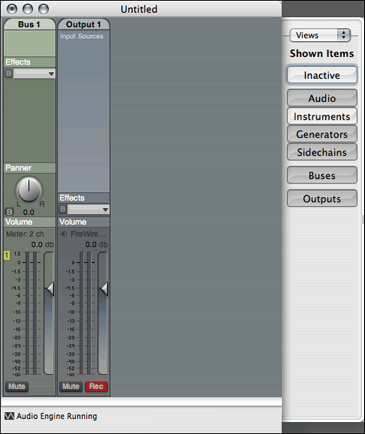

Summary: This section describes how to use the document drawer to use AU Lab’s Patch management features, configure view options, and manipulate the document’s audio device and midi device assigments. The drawer is accessible via three menu items on the Windows menu.
The AU Lab document window has a drawer attached to the right side of the document window that is used to manage several document properties including patch management features, view options, and audio device and midi device properties.
This drawer has a popup menu at the top of the window that can be used to change the mode of the drawer. The drawer can be shown or hidden and changes size based on the content it is displaying.
The first functional feature of the drawer is for patch management of the document. To view the Patch Manager, choose Show Patch Drawer from the Window menu, or if the drawer is already visible, choose Patches from the popup menu at the top of the drawer.
Patch Management is a new feature of AU Lab 2.0 that allows the user to create groups (henceforth referred to as patches) of input tracks and quickly toggle between these groups. Patches are stored in the document, and there must be an active patch at all times.
As shown in the picture above, patches are listed in an outline view. All documents have a Default Patch that contains all of the patches of the document. By default, this is the active patch of the document. As new tracks are added to the document, they are added to the default patch as well as the active patch.
As the image shows, each patch is a separate group in the patch list. The active patch name is drawn with a bold font style. In this case, the Default Patch is the active patch. All user created patches can be expanded to show which tracks in the document are part of that patch. As shown in the picture, there is an icon next to the track name that indicates the state of the track. Active tracks of the current patch have an orange bullet and will be audible in the document. Inactive tracks of a patch have a grey bullet and will not be audible. Furthermore, any audio units in the track will not be asked to render, so no additional cpu will be used for these inactive tracks.
To add a new patch, click on the button. This will create a new patch that includes all of the currently active tracks in the document. To remove an existing patch, select the patch to be removed, and click the button.
To change the active patch, double-click on the patch name of the patch you want to change to. To rename a patch, single-click on the name of the patch and type a new name. To enable or disable a track in a specific patch, click on the active state button to the right of the patch name.
By default, any tracks that are not in the active patch will hidden in the document window. Note that in the above image, the “Live Gig” patch is active, and therefore, only the active tracks “Audio 1”, and “Fileplayer” are visible. As previously mentioned, any tracks not in the current patch will not produce audio and their audio units will not be called to render. Switching between patches is a quick way to turn on and off individual tracks in order to switch between them and conserve cpu.
Note: It is possible to change the document view behavior so that inactive tracks are visible.
The second functional component of the document drawer is for configuring viewing properties. To view the view configuration, choose Show View Options from the Window menu or if the drawer is already visible, choose Views from the popup menu at the top of the drawer.
|  | |
|
Inactive Views and Instruments Hidden |
Inactive Views Visible but Instruments Hidden |
As the images above illustrate, the drawer has a number of buttons. Toggling these buttons, toggles the visibility of those track types in the document window. The inactive button allows you to toggle the visibilty of tracks that are not part of the active patch. When this view type is selected, any inactive tracks will be visible, but will be disabled and the contents cannot be interacted with.
The studio view presents an overview of the audio and MIDI configuration of the document. It has two tabs that can be used to switch between the audio settings and MIDI settings. To view the studio view, choose Show Studio from the Window menu or if the drawer is already visible, choose Studio from the popup menu at the top of the drawer.
The audio tab of the studio view displays the audio properties of the document. This includes device settings such as the input and output device used by the document, as well as the sample rate and number of frames.
It also shows a graphical representation of the settings of the input and output tracks in the document. This shows the number of channels used as well as the channel layout.
These settings can be modified on the fly to change the channel layout of the track on the device, or to even change the device itself simply by selecting the device from the popup menu. For information on how to change the channel assignments of the tracks, see Changing the Channel Assignments.
The MIDI tab shows all of the MIDI sources that are in use in the current document. These are displayed in an outline view where each node represents a MIDI Source. As the image below shows, each source that has an associated audio unit (either an instrument, or an effect that supports midi) can be expanded to show the track that contains the audio unit.
You can use drag and drop to move an individual item from one source to another by selecting the track that you wish to move and dragging it to a different source. This is useful if you open a document that has items that are mapped to a device that is no longer available, and you want to move the tracks to a different source.